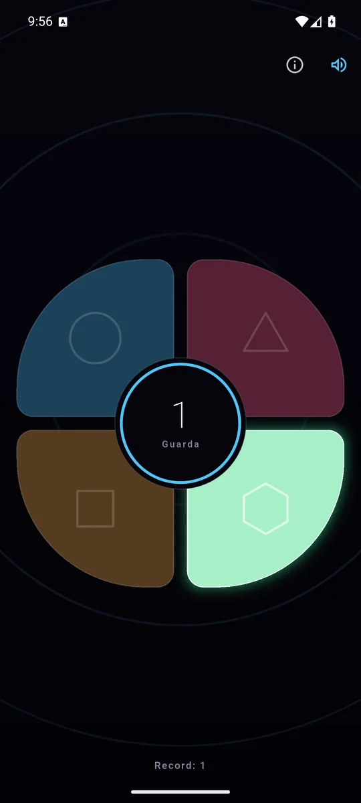
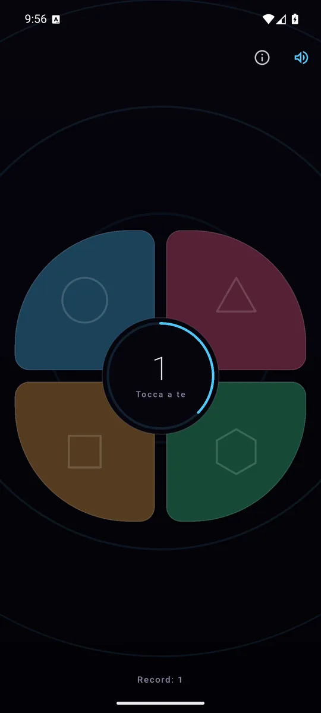
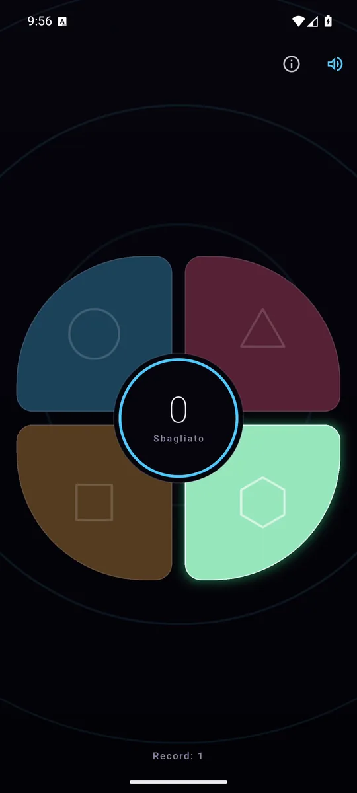

ItalianoEnglish
Si apre e il tabellone è già lì: quattro tasti, ognuno con la sua nota, il suo colore e la sua forma. Tocchi un tasto qualsiasi e la partita comincia: il tabellone accende una sequenza, tu la rifai. Se la rifai giusta si allunga di un passo, e il gioco va un po' più veloce.

Il tabellone accende la sequenza: colore, forma e nota insieme. 
L'anello al centro dice quanto tempo resta, e si svuota mentre pensi. 
Se sbagli, il tabellone accende il tasto che era: saperlo è metà della partita dopo.
Cosa fa
- Si apre sul gioco: nessun menù, nessun pulsante di avvio, nessun account. Il primo tocco è già la prima mossa.
- Il tasto risponde quando il dito scende, non quando si alza: in un gioco che si misura in millisecondi, aspettare il rilascio è ingiusto oltre che sgradevole.
- Il ritmo accelera con la sequenza, di continuo: non ci sono livelli da scegliere né soglie da attraversare: la partita di adesso è misurabilmente più svelta di quella di un giro fa.
- L'anello centrale è la pazienza: si svuota mentre pensi e torna pieno a ogni risposta giusta, perché il tempo è per tocco e non per sequenza.
- Mai tre lampi uguali di fila: contarli a occhio è impossibile, e un gioco che costringe a indovinare quanti erano non è un gioco di memoria.
- Il record resta sul telefono, e non va da nessun'altra parte.
- In italiano e in inglese, secondo la lingua del telefono.
La sequenza è una melodia, non quattro colori
Le quattro note sono pentatoniche e salgono da sinistra a destra: qualunque sequenza il gioco possa generare suona bene con sé stessa, e si può canticchiare. È lì che sta l'aiuto di memoria vero — la maggior parte delle persone ricorda il motivo molto più a lungo di quanto ricordi «blu, blu, rosa».
Le note non sono registrate: sono calcolate mentre giochi, qualche kilobyte di aritmetica invece di file audio, senza niente da scaricare al primo avvio e senza nessuna licenza dietro a nessun suono.
E ogni tasto porta anche una forma e una vibrazione tutta sua: il colore non è mai l'unica cosa che distingue un tasto da un altro, così si gioca anche in silenzio e anche se le quattro tinte non si distinguono.
I tuoi dati restano tuoi
Mimic non ascolta: nessun microfono, nessuna posizione, nessun accesso a foto o file, nessun account e nessun server nostro. Il record e la preferenza sul suono restano sul telefono e se ne vanno disinstallando l'app. I permessi si fermano a Internet, che serve agli annunci, e alla vibrazione che accompagna il tocco.
Come si paga
Con un banner ancorato in fondo, e basta: nessun annuncio fra la sequenza e la risposta, nessun abbonamento, nessuna vita da comprare. Se compare un annuncio a schermo intero, è a partita finita.
Dove trovarla
Non è ancora su Google Play. Quando ci sarà, il collegamento comparirà qui.